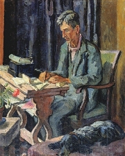
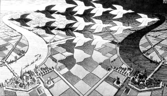
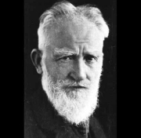
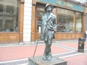
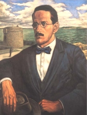
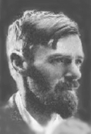
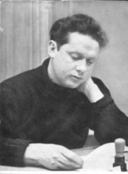
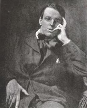

Vanessa Bellová: Leonard Woolf
Které irské a velšské spisovatele znáš?
Co víš o Irsku a Walesu?
|
VELKÁ BRITÁNIE
Zaèátek 20. století byl ve znamení národní emancipace Irù. Vznikla politická strana Sinn Fein, parlament schválil irskou samosprávu a po dublinském povstání (1916) a anglo-irské válce (1919-1921) získalo Irsko nezávislost. Vzápìtí zde ale vypukla obèanská válka, proto�e sinnfeisté nesouhlasili s rozdìlením ostrova na samostatnou a britskou èást (Severní Irsko). Ve stopách Irù se sna�ili jít i Velšané, ale bez úspìchu. Obrození irské a velšské kultury dalo vyrùst øadì kvalitních spisovatelù. Zajímavá literární díla vznikala i v britskıch koloniích, napøíklad v Indii.

M. C. Escher: Den a noc
|
Historie
Na poèátku 20. stol. byla Velká Británie nejvìtší koloniální velmocí svìta. Patøila jí Kanada, Austrálie, Novı Zéland, velká èást Afriky, Indie a další území v Asii. Bìhem 1. sv. války bojovala na stranì Dohody, pozdìji se úèastnila intervence proti sovìtskému Rusku. Roku 1921 si vybojovali nezávislost Irové (severní èást ostrova ale zùstala souèástí Velké Británie). V roce 1931 se Britské imperium zmìnilo na Britské spoleèenství národù a Westminsterskı statut zaruèil samostatnost Kanadì, Australskému svazu, Jihoafrické unii a Novému Zélandu. Indie s Pákistánem získaly samostatnost a� roku 1947.
|
G. B. Shaw (1856-1950)
Irskı dramatik George Bernard Shaw [šó] byl èlenem Fabiánské spoleènosti, která sdru�ovala socialisticky orientované intelektuály odmítající násilí a pøipravující svr�ení kapitalismu demokratickou cestou. Je autorem mnoha satirickıch komedií, ve kterıch vyu�il svùj smysl pro humor a ironii. Vlastní tvorbu rozdìlil do nìkolika okruhù: hry neutìšené – Záletník, �ivnost paní Warrenové, hry utìšené – Èokoládovı hrdina, Candida, Èlovìk nikdy neví a hry pro puritány – Caesar a Kleopatra. Ostatní dramata jako Pygmalion, Zpìt k Methusalemovi nebo Svatá Jana souèástí tìchto cyklù nejsou. Roku 1925 obdr�el Nobelovu cenu za literaturu.
|
G. B. Shaw: Pygmalion
Komedie Pygmalion vypráví pøíbìh chudé a zanedbané poulièní kvìtináøky Lízy Doolittlové, které se ujme bohatı profesor fonetiky Henry Higgins. Samolibì se vsadí se svım pøítelem, �e prostoøekou Lízu nauèí spisovné mluvì, udìlá z ní dámu a uvede ji do vyšší spoleènosti. Sázku sice vyhraje, ale Líza nemá �ádné finanèní prostøedky a k prodávání kvìtin se vrátit nemù�e. Útoèištì ve vlastním domì jí nabídne profesorova matka. Kdy� se starému mládenci Higginsovi zaène po Líze stıskat, odmítne jeho nabídku vrátit se zpìt a dává pøednost chudému mladíkovi, kterı se do ní zamiloval.
|

Které postavy v ukázce vystupují? Co se o nich dozvídáme?
Na èem je zalo�ena komika dialogù?
Srovnej dìj Shawova Pygmaliona a muzikálu My Fair Lady.
Kdo byl Pygmalion?
|
James Joyce (1882-1941)
Irskı spisovatel James Joyce [d�ejmz d�ojs] bıvá pova�ován za nejvìtšího spisovatele 20. století. �il v Paøí�i, Terstu a Curychu. Ovládal více ne� deset jazykù, trpìl vá�nou oèní chorobou a celı �ivot strávil v chudobì. Umìlecky mìl blízko k imagistùm. Je autorem sbírky povídek Dubliòané a experimentálních próz Portrét umìlce v jinošskıch letech, Odysseus nebo Plaèky nad Finneganem.

Joyceova socha v Dublinu
|
James Joyce: Odysseus
Experimentální román Odysseus se odehrává v irském Dublinu. Bìhem jedné noci ze 16. na 17.6.1904 pro�ívá hlavní hrdina jakousi paralelu s Odysseovım desetiletım putováním. Novináø Leopold Bloom (Odysseus) obstarává bì�né pochùzky. Ve vykøièeném domì ho potkává intelektuál Štìpán Dedalus (Telemachos), kterého se Bloom ujme jako jeho „otec“ a nabídne mu nocleh. Kdy� Štìpán odmítne, vrací se Bloom ke své �enì Molly (Penelopé), její� proud myšlenek román uzavírá.
Odysseus vyšel v Paøí�i roku 1922. Jako pornografie byl a� do roku 1933 zakázán ve všech anglicky mluvících zemích. Kniha je novátorská pøedevším svou mnohovrstevností – míšením rùznıch �ánrù a stylù, dùmyslnou prací s jazykem, slo�itım vyu�íváním symbolù, cizojazyènımi vlo�kami nebo originálními odkazy k Homérovì eposu.
|

Brian O’Toole: Joyce
Srovnej jednotlivé ukázky z Odyssea.
Která z nich tì zaujala nejvíce? Èím?
Zopakuj si, co víš o Odysseovi a ohlasech jeho putování v literatuøe.
|
David Herbert Lawrence
(1885-1930)
David Herbert Lawrence [dejvid hérbrt lórens] vyrùstal v puritánské rodinì. Procestoval celı svìt (Cejlon, Austrálie, Mexiko).
Napsal romány Synové a milenci, �eny milující nebo
Milenec lady Chatterleyové.
|
D. H. Lawrence: Milenec lady Chatterleyové
Kontroverzní román Milenec lady Chatterleyové vypráví pøíbìh neš�astné �eny, která nemù�e najít ukojení své touhy u man�ela, a proto si najde milence. Zámo�nı man�el Connie Chatterleyové byl ranìn a ochrnula mu dolní polovina tìla. Mladá �ena si pøestává s man�elem rozumìt a uspokojení svıch sexuálních i citovıch potøeb nakonec najde u hajného Mellorse. Èeká s ním dítì a opouští man�ela.
Román byl v Británii zakázán jako pornografie a� do roku 1960. Zajímavı je autorùv pokus o zachycení �enského pohledu na svìt a intimní vztahy.
|

Charakterizuj Connie a Clifforda.
Souhlasíš s jejich názory? Proè?
Co je pornografie?
Jakı je rozdíl mezi pornografií a umìním?
Mù�e spisovatel pravdivì vyjádøit pro�ívání �en? Nemìly by o �enách psát pouze �eny?
|
Virginia Woolfová (1882-1941)
Virginia Woolfová [verd�inja vulfová] byla duší umìlecké skupiny Bloomsbury Group, její� èlenové neuznávali tradièní viktoriánské hodnoty, napø. nerovnoprávné postavení �en v rodinì i spoleènosti. Její novátorské prózy jsou vystavìny na asociacích, èastıch odboèkách a komentáøích nebo volném proudu myšlenek. Je autorkou povídky Skvrna na zdi èi románù Paní Dallowayová, K majáku, Vlny a Orlando. Po celı �ivot trpìla depresemi a nakonec spáchala sebevra�du.
Co si myslíš o autorèinì vıroku „Lépe je �ít jako neznámı a zanechat po sobì oblouk, zahradnickou kùlnu, zeï, kde zrají broskve, ne� zazáøit jako meteor a nezanechat po sobì popel.“?
|
Virginia Woolfová: Orlando
V experimentálním románu Orlando se sna�í vypravìè v podobì �ivotopisce zachytit osudy bohatého šlechtice Orlanda. Orlando �il na dvoøe anglické královny Al�bìty I. Ve 30 letech ale pøestal stárnout a navíc se promìnil v �enu, která se do�ila 20. století. Orlando se setkává s vıznamnımi historickımi osobnostmi a kvùli svému pøerodu se musí vypoøádat s øadou absurdních situací.
Autorka konfrontuje pocity �eny a mu�e, zpochybòuje jejich tradièní role a neustále komentuje samotnı proces psaní. Svùj román doplnila jmennım rejstøíkem, kterı obsahují pouze díla nauèná.
|

Chtìl/a bys bıt mu�em nebo �enou? Proè?
Jak se vyvíjelo spoleèenské postavení mu�ù a �en?
Mají dnes jednodušší �ivot �eny nebo mu�i?
Kdy vládla královna Al�bìta I.?
|
Dylan Thomas (1914-1953)
Velšskı básník Dylan Thomas [dilen tomes] pracoval v britském rozhlase. Napsal básnické sbírky 18 básní, Dvacet pìt básní, Mapa lásky, Smrti a vstupy nebo Sebrané básnì. Je také autorem prózy Portrét umìlce jako štìnìte nebo nedokonèeného humoristického románu Dobrodru�ství obchodníka s lidskou kù�í. Od mládí mìl problémy s alkoholismem a bìhem pøednáškového turné po Spojenıch státech americkıch své závislosti podlehl.
|
Thomasova poezie
Thomasovy verše odsoudili mnozí kritikové jako nesrozumitelné. Autor experimentuje s novotvary, metrem i zvukomalbou a jeho básnické obrazy jsou velmi slo�ité.
„Mám rád vìci, které se píší tì�ko a jim� je tì�ko porozumìt. Rád si protiøeèím v obrazech, øíkám dvì vìci najednou a v jednom slovì, ètyøi ve dvou a jednu v šesti…“ (Dylan Thomas)
|

Pokus se vylo�it nìkterou z Thomasovıch básní.
|
W. B. Yeats (1865-1939)
Irskı básník William Butler Yeats [viljem batlr jejts] studoval vıtvarné umìní. Neúspìšnì se ucházel o ruku Maud Gonneové i její adoptivní dceru. Byl èelnım pøedstavitelem obrození irské národní kultury a po osamostatnìní Irska se stal senátorem. Je autorem básnickıch sbírek Oisínovo bloudìní nebo Vì�, dramat Hrabìnka Kathleen nebo Zemì touhy a povídek Tajemná rù�e. Sebral Pohádky a povìsti irskıch rolníkù a Irské pohádky a povìsti. Roku 1923 obdr�el Nobelovu cenu za literaturu.
|
Yeatsovy básnì
Yeats èerpal inspiraci v keltské mytologii a zajímal se o hermetické nauky (alchymie, astrologie...). Jeho poezie má blízko k symbolismu.
|

Pokus se o Yeatsovi zjistit více.
|
|
|
Další autoøi a jejich díla
John Galsworthy: Sága rodu Forsytù, Moderní komedie
Agata Christie: Deset malıch èernouškù
Aldous Huxley: Konec civilizace
J. R. R. Tolkien: Hobit, Pán prstenù
Gilbert Keith Chesterton: Napoleon z Notting Hillu, Klub podivnıch �ivností, Tajemství otce Browna
|
|
Internetové stránky
Shaw
Fantys: Odysseus, èlánek
Joyce
Joyce
Joyce
Joyce
Joyce
Lawrence a Joyce
Lawrence
Lawrence
Lawrence, muzeum
Thomas
Thomas
Thomas
Yeats
Yeats
Yeats
Bloomsbury Group
|
Doporuèená èetba
Divadelní moudrost Bernarda Shawa, Mladá fronta, Praha 1979 (�ivnost paní Warrenové, Pygmalión, Svatá Jana)
Hilskı, M., Nagy, L.: Od slavíka k papouškovi, Promìny britské prózy, Host, Brno 2002
Hilskı, Martin: Modernisté, Torst, Praha 1995 (Eliot, Joyce, Woolfová, Lawrence)
Chesterton, Gilbert Keith: Pøíbìhy otce Browna, Praha 1960
Joyce, James: Odysseus, pøel. A.Skoumal, Odeon, Praha 1976
Lawrence, David Herbert: Milenec lady Chatterleyové, pøel. F.Vrba, Odeon, Praha 1987
Shaw, George Bernard: Hry (2 svazky), SNKLHU, Praha 1956
Thomas, Dylan: Svlékání tmy, pøel. P.Šrut, ÈSS, Praha 1988
Vanèura, Z.: Umìní G. B. Shawa, Praha 1958
Woolfová, Virginia: Jak to vidí souèasník, pøel. I.Jílovcová-Kalivodová, One Woman Press, Praha 2000
Woolfová, V.: Orlando, pøel. K.Hilská, Argo, Praha 1994
Woolfová, V.: Smyècovı kvartet, pøel. Z.Mayerová, Odeon, Praha 1982
Woolfová, V.: Vlastní pokoj, pøel. M.Pokornı, Marie Chøibková, Praha 1998
Yeats, William Butler: Slova snad pro hudbu, pøel. J.Valja , SNKLU, Praha 1961
|
Vypracuj písemnı referát o nìkteré z uvedenıch knih.
Filmy
My Fair Lady, re�ie G.Cukor (Pygmalion)
Odysseus, re�ie J.Strick
Exkurze
Dublin, Irsko
|
|